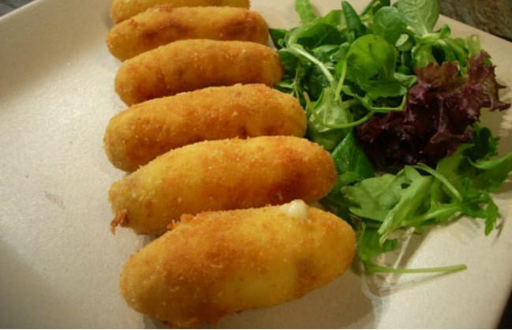
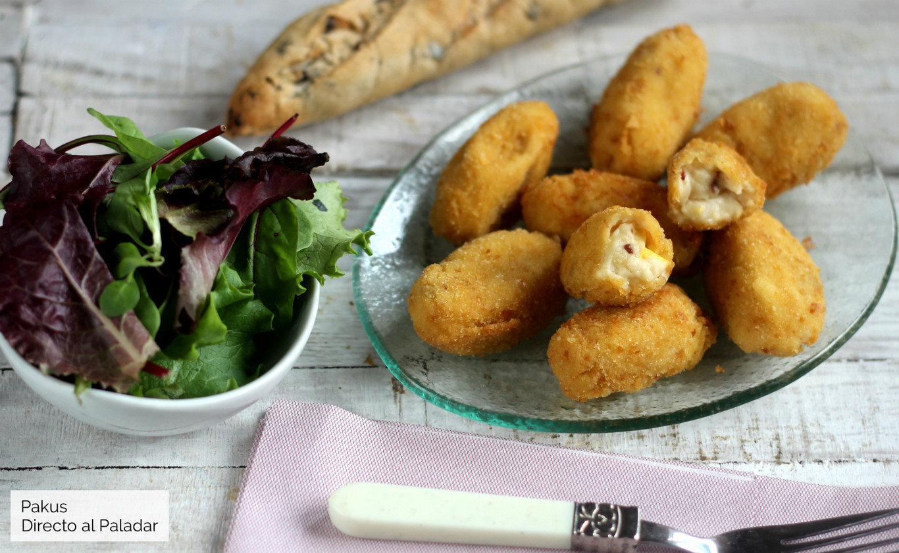
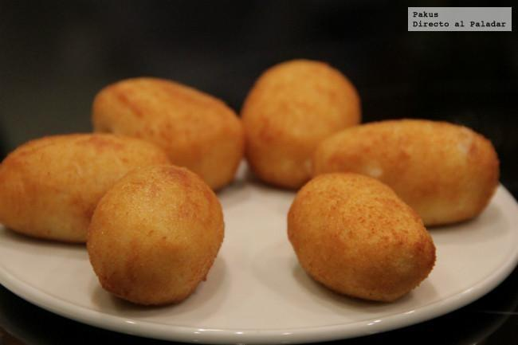

CROQUETAS
Bienvenido a nuestra página de croquetas
Recetas clásicas
Recetas para innovar
Recetas faciles y de corta duración
Trucos para hacerlas perfectas
Otros con bechamel
  
¡Suscribeté para recibir recetas!
Donde encontrarnos